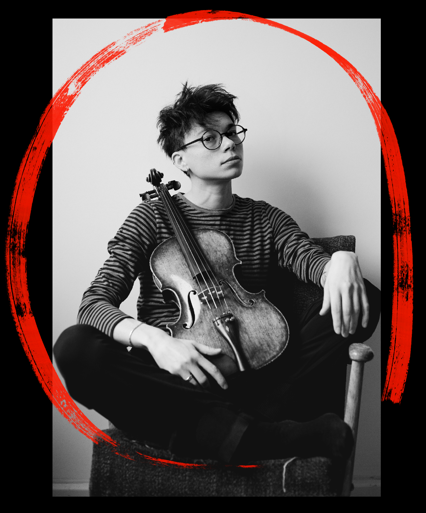

MARIE ALMA MALA SCHMIDT
MARIE ALMA MALA SCHMIDT
Marie Alma Mala Schmidt is a Vienna-based violist working in contemporary music, chamber music, and interdisciplinary performance.
After studying concert viola at the University of Music and Performing Arts Vienna (mdw), she developed a diverse artistic practice that spans classical orchestral performance, music theatre, chamber music, film music recordings, and collaborations with contemporary composers.
Alongside engagements with classic orchestras including the Volksoper Wien and recording with the Vienna Synchron Stage Orchestra, she has performed in theatre productions such as Coriolanus (Kasematten Wiener Neustadt), Höllenkinder (Theater Drachengasse), and Venus im Pelz (Theater Nestroyhof Hamakom), and appeared as band violist in Spring Awakening at the Volksoper Wien.
In 2021, she co-founded the Alma Rosé Quartet, an ensemble dedicated to the music by composers whose works were suppressed through persecution and exile. Her work has brought her to institutions and festivals including Exilarte, Festival Fremde Erde, and Wortwiege.
While grounded in a classical musical education, her artistic focus today lies in contemporary music and new forms of musical performance.
